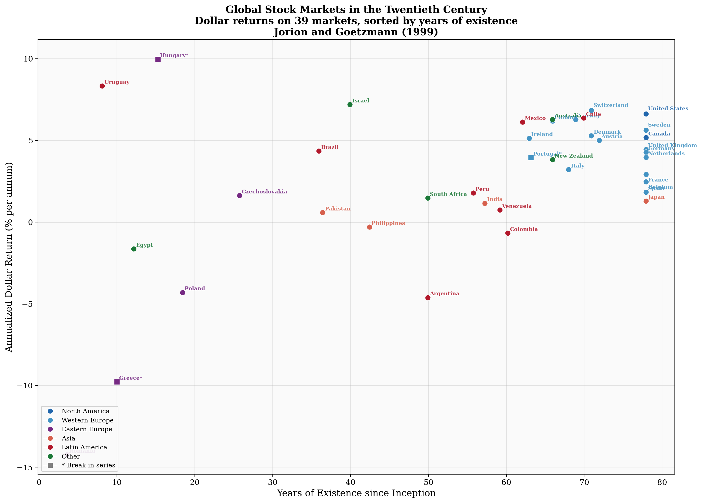
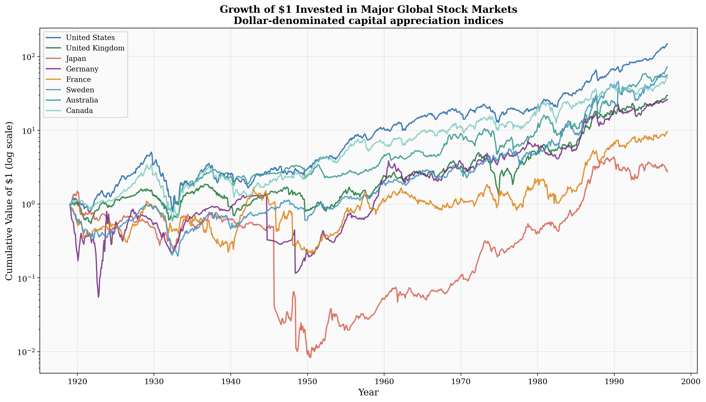
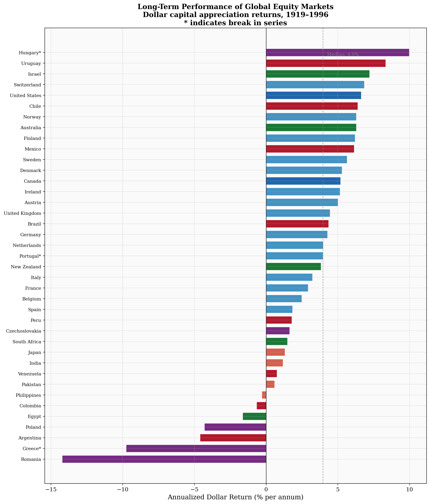
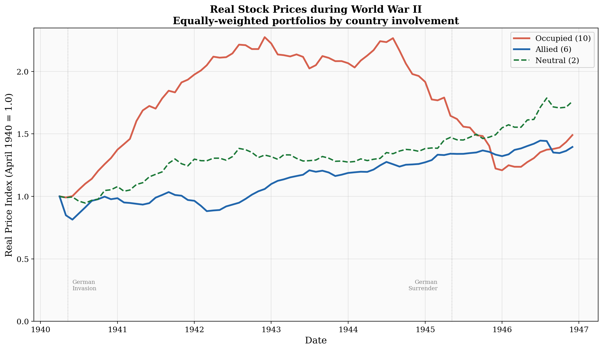

Global Stock Markets in the Twentieth Century
The Journal of Finance, Vol. LIV, No. 3, June 1999, pp. 953–980
Figure 1. Real Returns on Global Stock Markets
The figure displays average real returns for 39 markets over the period 1921 to 1996. Markets are sorted by years of existence. The graph shows that markets with long histories typically have higher returns. An asterisk indicates that the market suffered a long-term break. Color indicates region.

{kind=link}
Growth of $1 Invested in Major Markets
Cumulative dollar-denominated capital appreciation for eight major stock markets on a logarithmic scale, 1919–1996. The United States exhibits the highest long-run growth. Germany's wartime collapse and postwar recovery, and Japan's extraordinary postwar expansion, are clearly visible.

{kind=link}
Long-Term Performance of All 39 Markets
Annualized dollar capital appreciation returns for all 39 markets in the database, ranked from highest to lowest. The United States is not the highest — Hungary, Uruguay, and Israel earned higher returns, but over shorter and less stable periods. The median return across all countries is far below the U.S. figure, supporting the survivorship bias hypothesis. Color indicates region.

{kind=link}
Figure 3. Real Stock Prices during World War II
The figure displays the performance of equally-weighted portfolios of equities measured in real terms during the war. The sample is divided into occupied, allied, and neutral countries. Occupied countries show paradoxical gains due to price controls and artificial trading conditions; Allied markets initially fall ~20% before recovering; neutral countries (Sweden, Switzerland) remain relatively stable.

{kind=link}
Download Data
Monthly capital appreciation indexes for 39 global stock markets, 1919–1996. Developed markets (File 1) and emerging/other markets (File 2). Dollar-denominated and real (WPI-deflated) series. Code: 0 for missing data, - for interpolated data.
| File | Description | Download |
|---|---|---|
| Full Workbook | All series in one Excel file | XLSX (554 KB) |
| Dollar 1 | Dollar indexes — 17 developed markets (US, Canada, UK, W. Europe) | CSV |
| Dollar 2 | Dollar indexes — 22 emerging/other markets (Asia, Latin America, E. Europe, etc.) | CSV |
| Real 2 | Real (WPI-deflated) indexes — emerging/other markets | CSV |
| Readme | Data description and file guide | TXT |
Citation
Please cite the following paper when using this data:
Copied to clipboard.
BibTeX:
@article{jorion1999global,
author = {Jorion, Philippe and Goetzmann, William N.},
title = {Global Stock Markets in the Twentieth Century},
journal = {The Journal of Finance},
volume = {54},
number = {3},
pages = {953--980},
year = {1999},
doi = {10.1111/0022-1082.00133}
}